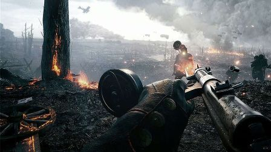
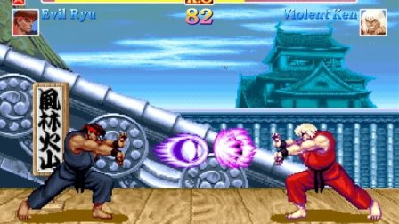
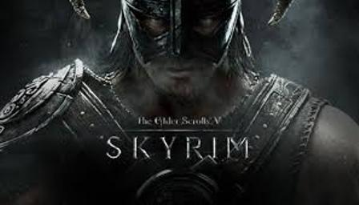
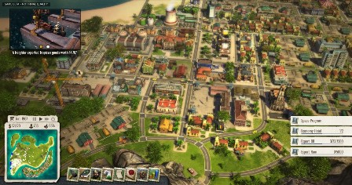
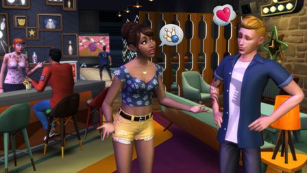

Action games emphasize physical challenges that require Hand-eye coordination and motor skill to overcome. They center around the player, who is in control of most of the action. Most of the earliest video games were considered action games; today, it is still a vast genre covering all games that involve physical challenges. Action games are classified by many subgenres. Platform games and fighting games are among the best-known subgenres, while shooter games became and continue to be one of the dominant genres in video gaming since the 1990s. Action games usually involve elements of twitch gameplay.
Platform games (or platformers) have gameplay primarily centered around jumping and climbing to navigate the character's environment. They may have enemies or obstacles to avoid and fight or may just be pure jumping puzzles. Generally the player's character in a platform game is able to jump many times their own height and player is offered some control over their movement in midair as well as the height and distance of their jumps. Settings tend to be vertically exaggerated with lots of uneven terrain that the player can leap to or fall off of.
In shooter games (or simply shooters), players use ranged weapons to participate in the action, which takes place at a distance. Most shooters involve violent gameplay; lethal weaponry is used to damage opponents. However, some shooters, such as Splatoon, have non-violent objectives. Shooters, aside from subgenre classifications, can be further classified by their perspective of play. First-person shooters are played within the protagonist's perspective; they often include a heads-up display displaying key information such as the current health of the protagonist. In third-person shooters, the protagonist's body can be seen fully; the environment is rendered from a distance. Some shooters incorporate both perspectives.
Fighting games center around close-ranged combat typically one on one fights or against a small number of equally powerful opponents, often involving violent and exaggerated unarmed attacks. Most fighting games feature a large number of playable characters and a competitive multiplayer mode.
Survival games start the player off with minimal resources, in a hostile, open-world environment, and require them to collect resources, craft tools, weapons, and shelter, in order to survive as long as possible. Many are set in procedurally-generated environments, and are open-ended with no set goals. They may overlap with the survival horror genre, in which the player must survive within a supernatural setting, such as a zombie apocalypse..
Adventure games were some of the earliest games created, beginning with the text adventure Colossal Cave Adventure in the 1970s. That game was originally titled simply "Adventure," and is the namesake of the genre. Over time, graphics have been introduced to the genre and the interface has evolved. Unlike adventure films, adventure games are not defined by story or content. Rather, adventure describes a manner of gameplay without reflex challenges or action. They normally require the player to solve various puzzles by interacting with people or the environment, most often in a non-confrontational way. It is considered a "purist" genre and tends to exclude anything which includes action elements beyond a mini game. Because they put little pressure on the player in the form of action-based challenges or time constraints, adventure games have had the unique ability to appeal to people who do not normally play video games.
Action-adventure games combine elements of their two component genres, typically featuring long-term obstacles that must be overcome using a tool or item as leverage (which is collected earlier), as well as many smaller obstacles almost constantly in the way, that require elements of action games to overcome. Action-adventure games tend to focus on exploration and usually involve item gathering, simple puzzle solving, and combat. "Action-adventure" has become a label which is sometimes attached to games which do not fit neatly into another well known genre. Because of their prevalence on video game consoles and the absence of typical adventure games, action-adventure games are often called "adventure games" by modern gamers.
Role-playing video games draw their gameplay from traditional [not always] role-playing games like Dungeons and Dragons. Most of these games cast the player in the role of one or more "adventurers" who specialize in specific skill sets (such as melee combat or casting magic spells) while progressing through a predetermined storyline. Many involve manoeuvring these character(s) through an overworld, usually populated with monsters, that allows access to more important game locations, such as towns, dungeons, and castles. Since the emergence of affordable home computers coincided with the popularity of paper and pencil role-playing games, this genre was one of the first in video games and continues to be popular today. Gameplay elements strongly associated with RPG, such as statistical character development through the acquisition of experience points, have been widely adapted to other genres such as action-adventure games.  Though nearly all of the early entries in the genre were turn-based games, many modern role-playing games progress in real-time. Thus, the genre has followed the strategy game's trend of moving from turn-based to real-time combat. The move to real-time combat began with the release of Square's (now Square Enix's) Final Fantasy IV, the first game to use the Active Time Battle system; this was quickly followed by truly real-time role-playing games such as the Mana series, Soul Blazer and Ultima VII. Some throwbacks to older turn-based system did exist such as the Golden Sun series for Game Boy Advance.
Sandbox RPG or Open World RPG allow the player a large amount of freedom and usually contain a somewhat more open free-roaming (meaning the player is not confined to a single path restricted by rocks or fences etc.) world. Sandbox RPGs contain similarities to other sandbox games such as the Grand Theft Auto series, with a large number of interactable non-player characters, large amount of content and typically some of the largest worlds to explore and longest playtimes of all RPG due to an impressive amount of secondary content not critical to the game's main storyline. Sandbox RPG often attempt to emulate an entire region of their setting.
Some RPG give the player several choices in how their story will unfold. Typically the player can have an effect on whether the enemies in the game will be taken out lethally or non-lethally. This is very popular because it makes the player have to deal with the consequences of their own choices whenever they fail to save someone or don't get the ending they desired, for example. This makes for a much more interactive experience between gamers and gameplay, also explaining their popularity. Some notable examples include the Minecraft: Story Mode series, Megami Tensei, SaGa, Mass Effect and Dragon Age series.
Construction and management simulations (or CMS) are a type of simulation game which task players to build, expand or manage fictional communities or projects with limited resources.  In city-building games the player acts as overall planner or leader to meet the needs and wants of game characters by initiating structures for food, shelter, health, spiritual care, economic growth, etc. Success is achieved when the city budget makes a growing profit and citizens experience an upgraded lifestyle in housing, health, and goods. While military development is often included, the emphasis is on economic strength. Perhaps the most known game of this type is SimCity, which is still popular and has had great influence on later city-building games. SimCity, however, also belongs to the God Games genre since it gives the player god-like abilities in manipulating the world. Caesar was a long-running series in this genre, with the original game spawning three sequels. Business simulation games generally attempt to simulate an economy or business, with the player controlling the economy of the game. A government simulation game (or "political game") involves the simulation of the policies, government or politics of a country, but typically excludes warfare. Recently, these types of games have gained the moniker "serious game".
Life simulation games (or artificial life games) involve living or controlling one or more artificial lives. A life simulation game can revolve around individuals and relationships, or it could be a simulation of an ecosystem.  Biological simulations may allow the player to experiment with genetics, survival or ecosystems, often in the form of an educational package. An early example is SimLife, while relatively recent ones are Jurassic Park: Operation Genesis and Spore. In other educational simulations such as Wolf, the player "lives the life" of an individual animal in a relatively realistic way. Hailed as one of the greatest life simulation games, however, is Creatures, Creatures 2, Creatures 3, where the player breeds generations of a species in a hugely detailed ecosystem. Unlike other genres of games, god games often do not have a set goal that allows a player to win the game. The focus of a god game tends to be control over the lives of people, anywhere from micromanaging a family to overseeing the rise of a civilization. Pet-raising simulations (or digital pets) focus more on the relationship between the player and one or few life forms. They are often more limited in scope than other biological simulations. This includes popular examples of virtual pets such as Tamagotchi, the Petz series, and Nintendogs. Social simulation games base their gameplay on the social interaction between multiple artificial lives. The most famous example from this genre is Will Wright's The Sims.